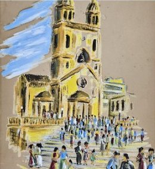

12 Salas 1 e 2
Hassis Florianópolis
A cidade e seus habitantes, a velha Figueira, o vento sul, a ilha repleta de casos e acasos: com pincel rápido e gestual, Hassis registrou o cotidiano ilhéu em movimento, seus costumes, seu folclore e suas crenças.
As cenas de rua dialogam com o artista que fotografava e filmava tudo: as pessoas, os amigos, a arquitetura. Na fotografia, também experimentou ângulos inesperados e retratos inusitados de sua cidade e de sua família.